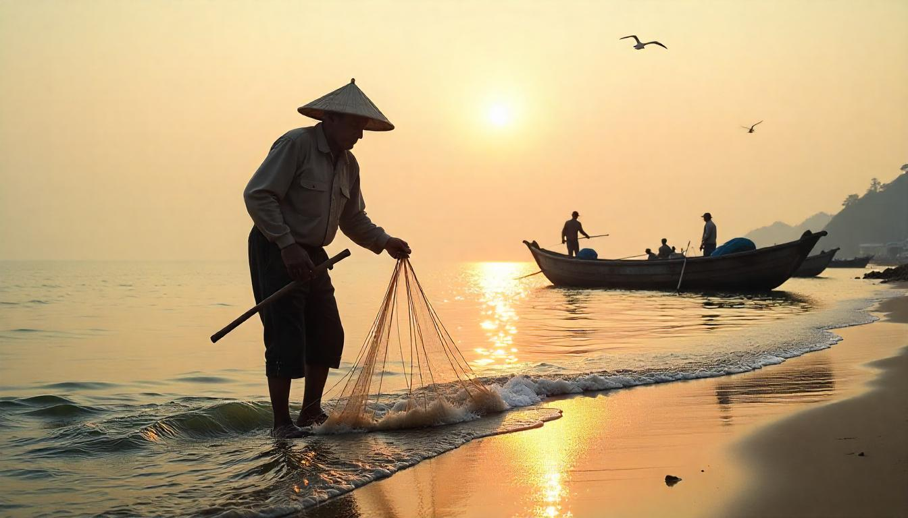
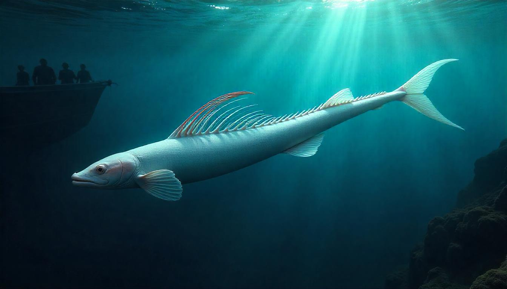
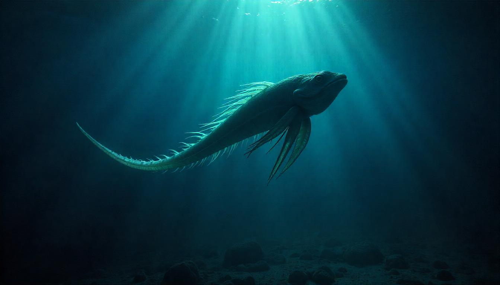
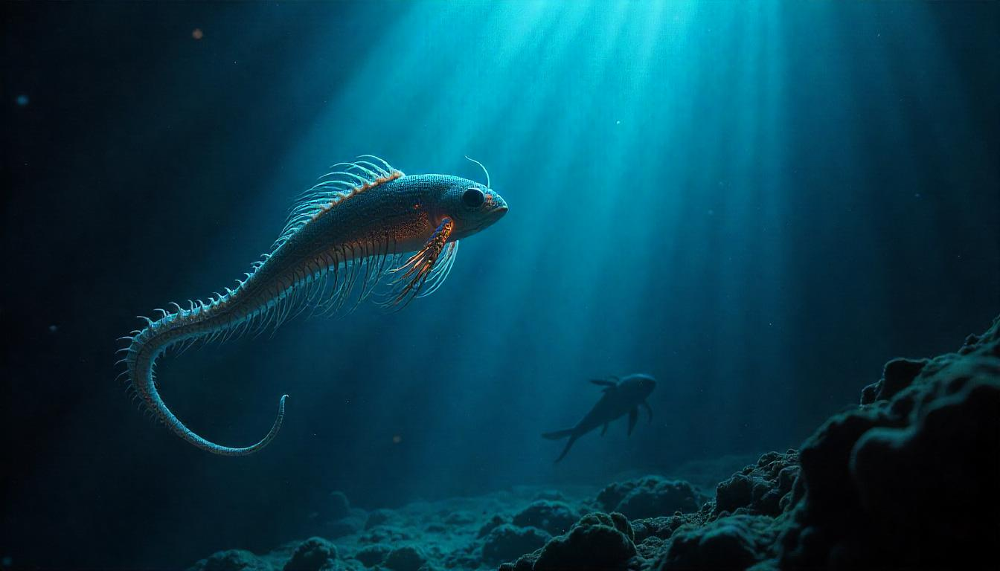
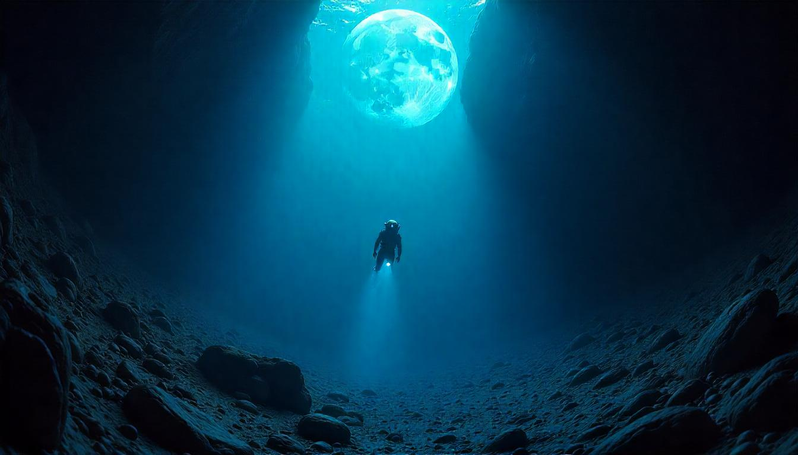
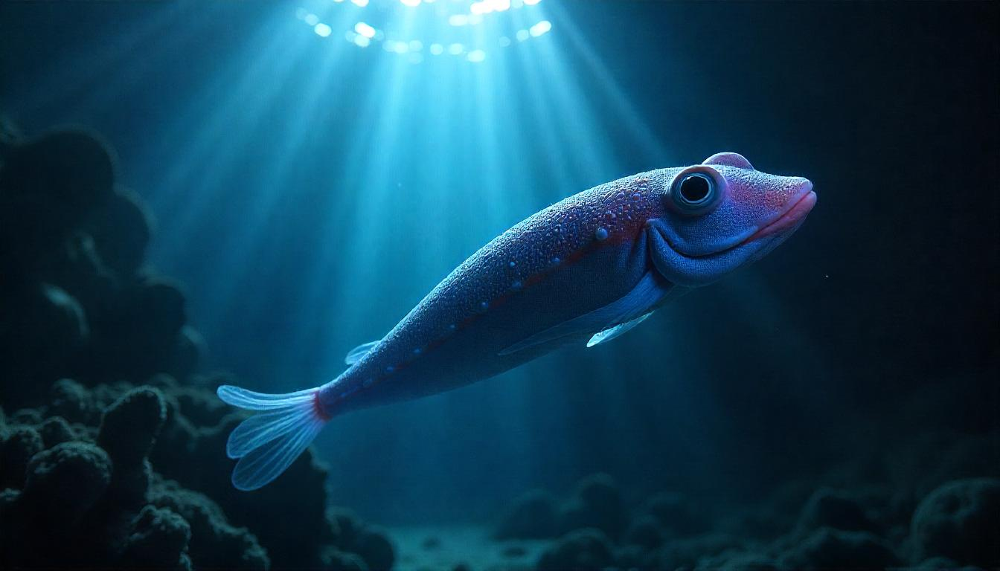
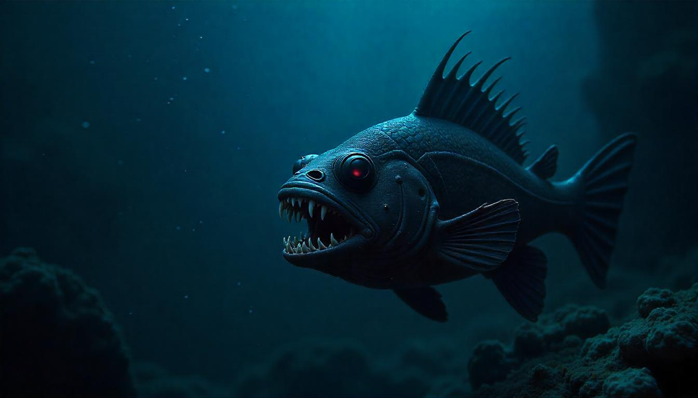
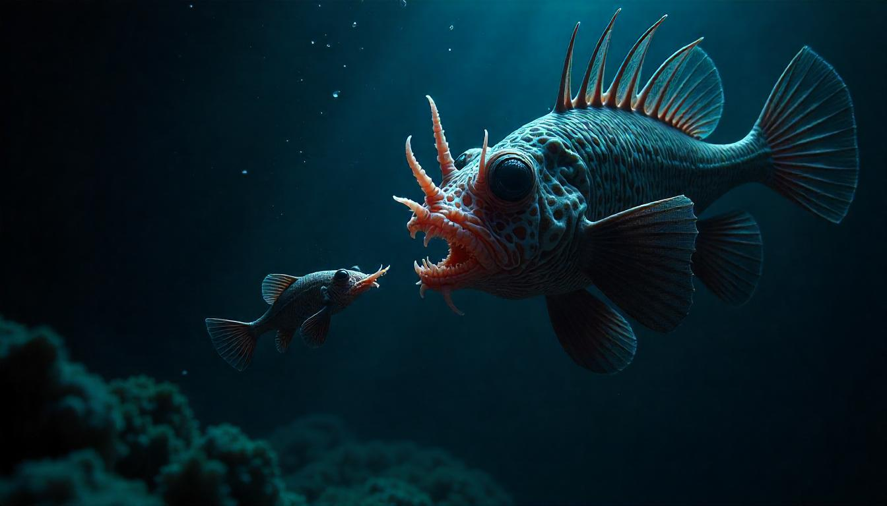
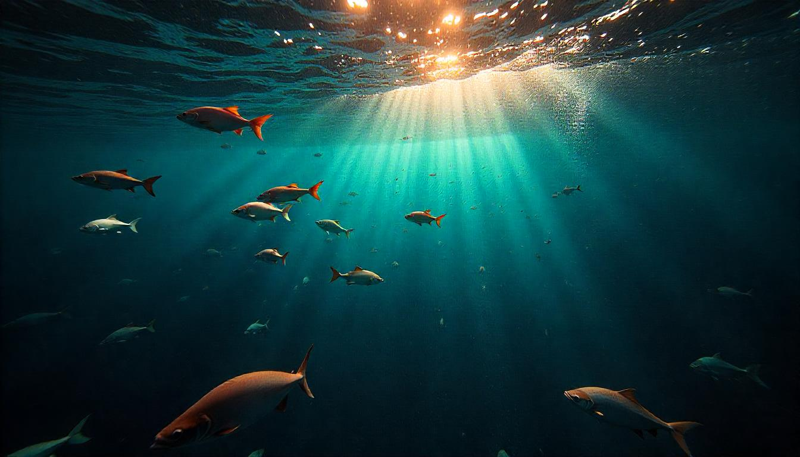

Why are Deep Sea Creatures Coming to Surface
Leviathan Mystery

It was January 2013. In Japan, a fisherman set out in his boat to catch fish. Somewhere in the sea, near a beach, he cast his fishing net into the water. After some time, while pulling out the fish trapped in his net, he found a very strange, long fish caught in it. This fish was extremely long, almost like a snake—its length was later measured to be nearly six meters. Its body was sticky and rubber-like, white in color.
This was not a normal fish but one that had come from the deep sea. It was a deep-sea oarfish. Generally, this fish is found nearly one kilometer deep in the ocean. The fisherman released it back into the sea because, according to Japanese folklore, the sighting of an oarfish is considered a warning sign of a disaster, especially an earthquake.
In 2011, a devastating earthquake struck Japan, and just before that earthquake, nearly twenty oarfish dead bodies were found on Japanese coasts. However, today, these stories are being questioned because not only in Japan but in various parts of the world, several oarfish dead bodies have been found on the shores in recent years.
In 2013, a fisherman caught nearly fifty oarfish at once. In 2024, oarfish were spotted three times in California. In February 2025, a live oarfish was seen in Mexico. It’s an oarfish. The repeated sightings of these fish in such a manner are truly astonishing.

It was only in the year 2001 that a living oarfish was filmed for the first time. But the discussion here is not just about the oarfish. Many deep-sea creatures are suddenly being spotted emerging from the depths of the ocean.
The Giant Phantom Jellyfish—an incredible creature whose ribbon-like tentacles can grow over ten meters long—is usually found at depths of one to two kilometers. However, in Antarctica, it was seen at a depth of just 80 meters.
This year, two more such incidents occurred. In Russia, fishermen caught a creature so bizarre that people started saying it looked like an alien. It was a smooth lumpfish, whose body resembled a brain.
Additionally, about 2,000 meters off the coast of Spain, a black sea devil (anglerfish) was spotted near the ocean’s surface. This terrifying-looking fish is literally named the “sea devil.” Both of these fish belong to the category of deep-sea creatures, which are almost never seen near the surface. Clearly, something unusual is happening.
The question arises here—what exactly is happening?


About 71 percent of the Earth’s surface is covered with water. We have divided this water into different oceans. 97 percent of the water found on Earth is in the five main oceans: the Pacific Ocean, Atlantic Ocean, Indian Ocean, Arctic Ocean, and Southern Ocean.
Additionally, 94 percent of the world’s wildlife is found in these oceans. But do you know something surprising? Humans have explored and mapped only 5 percent of the ocean so far. The remaining 95 percent, especially the deep sea, still remains unknown.
What’s even more astonishing is that we have better maps of Mars compared to the ocean floor. And in total, twelve astronauts have spent over 300 hours in space!

When you stand on a beach in Goa and look at the blue water, you are only seeing the topmost layer of the ocean. This is called the Sunlight Zone, where sunlight can reach. The wildlife in this part of the ocean is the most colorful and diverse. It is also the only layer of the ocean where photosynthesis is possible. That’s why macroalgae and phytoplankton are found here. These two living organisms form the foundation of the marine food chain.
Additionally, most of the creatures we typically associate with the ocean, such as whales, sharks, turtles, and dolphins, live in this zone. But as we go deeper, the light starts to fade because water absorbs sunlight.
- At 10 meters deep, only 16 percent of sunlight remains.
- By the time we reach 100 meters, only 1 percent of sunlight is left.
- And if we go below 1,000 meters, no sunlight can reach at all.
- This is why it becomes extremely difficult for humans to see deeper into the ocean.
However, just 200 meters below the surface, the second oceanic layer begins, known as the Twilight Zone. As you might know, sunlight consists of all colors, forming a complete color spectrum.

- Red has the longest wavelength, while blue and violet have the shortest wavelengths.
- Water absorbs longer wavelengths first, which is why red disappears first, followed by orange, yellow, and green.
- Only blue and violet light can reach the Twilight Zone, while all other colors vanish.
- This is also the zone where strange creatures start to appear. One such creature is the strawberry squid—a squid that looks exactly like its name. It has one large eye and one small eye.
The large eye is adapted to look upwards, toward the light above. The small eye is adapted to see bioluminescence in the dark depths below.
Its own color acts as a camouflage in its environment.Luciferin and luciferase—when these two chemicals mix, a chemical reaction occurs. The energy released from this reaction does not produce heat but instead is emitted in the form of light. These deep-sea creatures use this bioluminescent light either to hide themselves, to attract other organisms, or sometimes even to communicate with each other.

As soon as its stomach is full it stops glowing. Lives at a depth of six hundred to eight hundred meters.

Another truly amazing fish—its head is transparent and dome-shaped. Look at it closely. There is no other fish in the world that looks even remotely like this one. At first glance, it might seem like its eyes are the black dots above its nose. But in reality, its true eyes are the green glowing bulbs inside its head.
One of the most fascinating things about this fish is that its eyes can only look upward. So how does it see the food it eats? Scientists theorize that it has the ability to rotate its eyes, allowing it to spot prey from different angles.
This fish truly seems like something straight out of alien technology—a living submarine with a 360-degree rotating telescope inside a transparent dome.
If you go even deeper into the ocean, you will encounter something terrifying—the giant squid. Giant squids can grow up to 13 meters long, which is the size of a two-story house. Their eyes are massive, measuring 25–30 centimeters in diameter—as big as a basketball. These are the largest eyes found in any animal on Earth, perfectly adapted to detect prey in the pitch-black depths of the ocean.

If you remember this animation, these fish have a fishing pole-like structure on their heads with a glowing bulb attached. They use this bioluminescent lure to attract prey in the dark waters. This was also shown in the film, Finding Nemo. However, what the film didn’t show—and what is truly bizarre about anglerfish—is their reproduction strategy.
 Male anglerfish are ten times smaller than females, and their only purpose in life is to reproduce. When a male finds a female, he attaches himself to her body—and by “attaches,” it literally means he merges with her.
Their bodies fuse together, and they share the same bloodstream. Over time, the male essentially becomes a part of the female’s body, functioning like one of her organs.
Females can even collect multiple male partners for reproduction. In fact, a single female can have six to eight males attached to her body at once. Hearing all this, you can probably imagine—while life on land follows certain familiar rules, the deep sea has an entirely different story of its own.
Why are these deep-sea creatures coming to the surface?
Let’s go back to World War II. During this time, some Navy sonar operators made a fascinating discovery. They noticed that at night, the entire seafloor appeared to rise hundreds of meters. They were using sonar technology when they observed this phenomenon.
In reality, the seafloor was not rising—instead, massive swarms of fish, squids, and plankton were swimming upward in the ocean. This strange event is now known as the Deep Scattering Layer (DSL)—the first clue to the hidden highways of the ocean, where trillions of marine organisms migrate daily.
The Deep Scattering Layer is the part of the ocean that reflects sound waves, and it does so because of the extremely high density of marine life present there.
Scientists have discovered that every day, from tiny zooplankton to medium-sized fish, trillions of creatures migrate up to the ocean’s surface and then return to the depths. This is now recognized as the largest migration on Earth—and the most astonishing part is.

This up-and-down migration is known as Diel Vertical Migration (DVM), and it happens every single day, every single night.
Look at this graph of the migration. Whenever the sun is up, the yellow-colored region remains at a depth of around 400 meters in the ocean. But at night, this yellow region moves up and reaches the ocean’s surface.
And this isn’t something that happens in just one location—it happens everywhere. From the Pacific Ocean to the Indian Ocean, from the North Atlantic to the Southern Ocean, this phenomenon is observed across the world’s oceans.
But the real question is—why do these creatures go through such a difficult journey every single night? The answer is simple: To eat without being eaten.
In simple terms, this migration happens for food. Since photosynthesis only occurs in the surface layers of the ocean, phytoplankton are found only in these upper layers. These phytoplankton serve as food for small fish and zooplankton. Now, you might wonder—if food is available at the surface, why don’t these creatures just come up and eat it in the morning?
Because in daylight, they risk being eaten themselves. Predators like sharks, whales, and dolphins roam near the surface, hunting for food. To avoid being eaten, small fish and deep-sea creatures rise to the surface only at night, feed in the darkness, and disappear back into the deep before sunrise.
However, in recent years, this pattern is changing. Due to climate change, this daily migration is becoming more permanent.
As the Earth warms, these deep-sea creatures are moving toward the poles, searching for cold, stable environments. You may already know that the oceans absorb most of the excess heat caused by global warming. In fact, 90% of the heat generated by climate change is being absorbed by the ocean. And as this heat continues to be absorbed by the water over time.
Oxygen Levels in the Deep Sea Are Declining
The deep sea is actually running out of oxygen. Even a slight decrease in oxygen levels can lead to a large-scale decline in populations and put many species at risk of extinction. These deep-sea creatures have evolved in stable oxygen environments, but now, in search of more oxygen, they are moving toward the surface.
They are rising from the deep sea to surface waters, and this is extremely dangerous for them because they are not evolved to survive in surface conditions. During the daytime, they can easily fall prey to sharks, whales, and other predators.
Scientists estimate that by the end of this century, the temperature of the abyssal zone (the deep-sea region) will increase by 1°C, and deep-sea creatures will migrate 4 to 11 times faster than surface species.
The Future of These Amazing Creatures Is in Danger
Many of these creatures could go extinct forever. What’s even more shocking is that many of them haven’t even been discovered yet.
Every year, scientists discover new species in the deep sea. But because of human activities, species that we haven’t even found yet might go extinct before we ever get the chance to study them. And this isn’t just about marine life—our own survival is connected to the deep sea.
How the Deep Sea Protects Us
The deep sea stores an enormous amount of carbon. Phytoplankton in the ocean act like trees, absorbing carbon dioxide from the atmosphere and storing it in the deep sea.
This process regulates CO₂ levels in our atmosphere. However, due to climate change, the oceans’ ability to absorb carbon dioxide is weakening.
A More Immediate Threat: Deep-Sea Mining While climate change is a long-term threat, a more immediate danger to deep-sea creatures is caused by human activities—specifically, deep-sea mining.
Take a look at this Scaly-Foot Snail.
- Its shell is made of iron.
- It lives near hydrothermal vents on the deep-sea floor.
- It has the largest heart (relative to body size) in the entire animal kingdom—4% of its body volume.
- If humans had a heart that size, it would be as big as our heads!
- This snail has lived near hydrothermal vents for millions of years, but now, greedy corporations want to wipe it out.
So far, this snail has been found in only three locations on Earth. And all three locations are now being targeted by mining companies.
These corporations want to extract gold and silver from hydrothermal vents, destroying entire ecosystems that have existed for millions of years.
The Role of Corrupt Politicians in Deep-Sea Destruction Some corrupt politicians, like Donald Trump, promote deep-sea mining to benefit their corporate allies. These politicians repeatedly brainwash their followers into believing that climate change isn’t real.
Trump has openly dismissed environmental concerns:
“I terminated the ridiculous Green New Deal scam.” “I withdrew from the unfair Paris Climate Accord.” And on the other hand, he supports deep-sea mining and similar destructive industries to enrich his corporate friends.
Narendra Modi is no different.
He loves using animals for PR stunts—posing for photos at Ambani’s private zoo—but when it comes to actually protecting wildlife, he does nothing.
There are countless examples of this:
Ajodhya forest in India is being destroyed for mining. Nicobar Islands, home to unique biodiversity, are being exploited for corporate profit. Now, Modi’s government is also planning deep-sea mining near Kerala. This won’t just harm marine life—it will also devastate local communities who depend on the ocean. Crony capitalism has already poisoned our rivers and soil. At the very least, let the deep sea remain untouched.
Politics and Science Are Linked—Wake Up!
Some people might ask—why bring politics into a scientific topic? If you still don’t understand, let me make it clear—everything is connected. Science, environment, and economics are all controlled by politics. The middle class is being destroyed because corrupt politicians serve their corporate allies, not the people. Our last remaining natural ecosystems are being wiped out because politicians prioritize corporate profits over the environment. The Fight Against Deep-Sea Mining
Deep-sea mining has not yet started anywhere in the world.
But corporate-backed politicians are pushing hard to make it happen. There is an international organization called the United Nations’ International Seabed Authority (ISA). This organization has the power to grant permits for deep-sea mining.
So far, no country has been given permission to mine the deep sea. But the pressure is increasing. Reports suggest that some companies may get permission this year.
This Is Our Chance to Stop It!
Many activists and NGOs have already started protesting against deep-sea mining. 32 countries have openly declared that they will NOT support deep-sea mining. (You can see their names on the screen.)
A Once-in-a-Generation Opportunity
We were born into a world where: Fossil fuel industries were already destroying the planet. Forests were already being wiped out for mining. But deep-sea destruction hasn’t happened yet.
And we have the power to stop it.
This All images AI Generated from Freepik